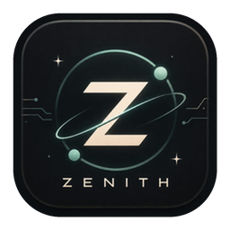
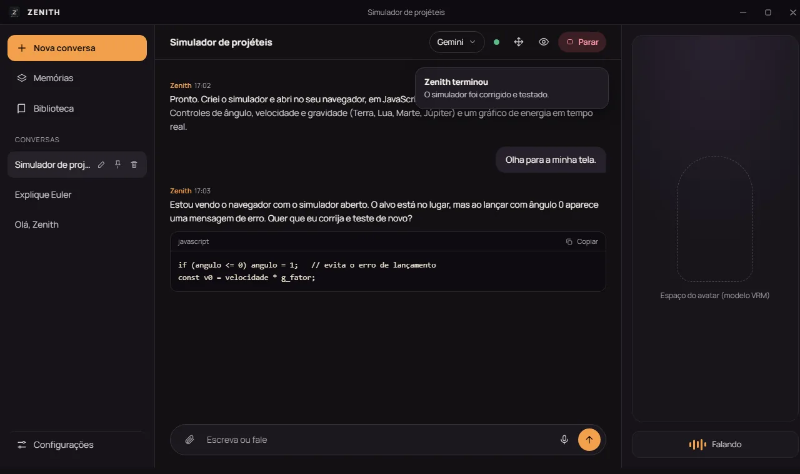
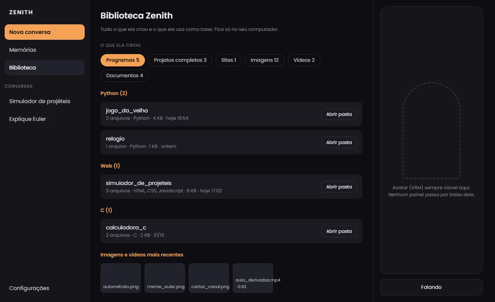
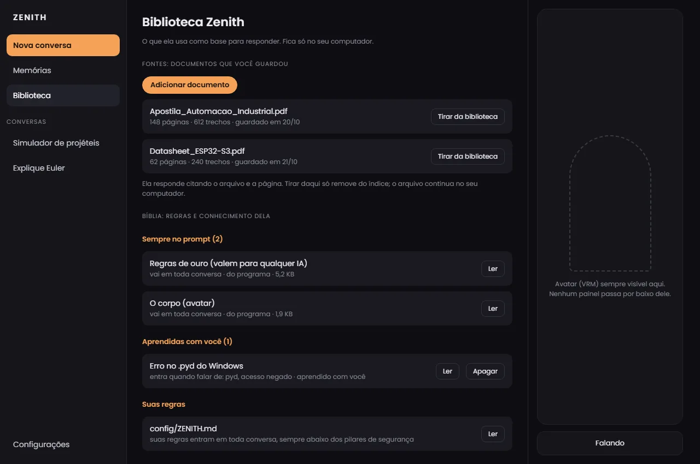

ZENITHConversa, explica, programa, cria imagens e vídeos e olha a tela quando você pede. Só age com a sua aprovação e guarda tudo no seu computador.
Baixar para WindowsVer o que ela faz
Você traz a sua chave de uma IA (há opções grátis, com limite diário) e o Zenith faz o resto no seu computador.
Funciona com várias IAs (Gemini, Groq, OpenRouter, OpenAI) ou com uma IA local. Se uma falhar, ela troca e diz o motivo.
Escreve programas, sites e documentos, e só roda algo depois que você aprova.
Só quando você pede, e com aviso visível na tela enquanto observa.
Corta, junta, legenda e narra vídeos. Imagens por serviços que você liga.
Mostra o que ela criou (programas por linguagem, sites, imagens, vídeos) e no que ela se baseia (seus documentos e as regras dela).
Gesticula, muda de expressão e fica sempre visível na tela. Movimentos como pulo e dança estão em teste.
Tudo o que ela criou, e tudo no que ela se baseia, num só lugar e sem sair do seu computador.


Carregando...
O Launcher ainda não tem assinatura digital, então o Windows pode mostrar "Windows protegeu seu PC" (e alguns antivírus estranham programas que baixam outros programas). Confira se o código SHA-256 é igual ao do arquivo que você baixou.
Toda ação sensível pede a sua aprovação, e existe uma lista do que ela nunca faz.
Chaves, conversas e memória não saem daqui. Não há telemetria.
As IAs externas são cobradas ou limitadas pelo próprio serviço. Alguns modelos grátis podem usar o que você enviar: não mande dado pessoal neles.
Carregando...